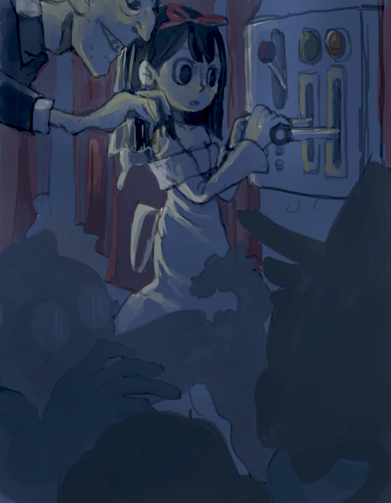

Nilam Sari
Collection of Illustration Work
2014 - present
Table of content
- Dream Away
- Series of Unfortunate Events; Chapter 14
- Shape and Sound
- Underwater Tactile Wall
- Me N Friens, It's December 2020
- Children Encyclopedia of Beetles
- A Personal Comic About Fish and Grief
- Collection of Fan Art
Dream Away
2014—Adobe Photoshop and Wacom Intuos 4
Details:
^^^Back to the top^^^
Series of Unfortunate Events; Chapter 14
2017—Adobe Photoshop and Wacom Intuos 4
Illustrated scenes from chapter 14 from Series of Unfortunate Events by Lemony Snicket
^^^Back to the top^^^
Shape and Sound
2016—Adobe Illustrator and After Effects
^^^Back to the top^^^
Underwater Tactile Wall
2016—Adobe Photoshop and Wacom Cintiq
Underwater themed illustration for a tactile wall designed for the Maryland Science Center

Details:
^^^Back to the top^^^
Me N Friens, It;s December 2020
2020—Flipaclip, iPad Pro and Apple Pencil
I Want to Become One with The Universe.
You Are. You Will Always Be.
Will You? With Me?
We Are. We Will Always Be.
Characters illustrated is Kermit the Frog from The Muppets.
^^^Back to the top^^^
Children Encyclopedia of Beetles
2017—Adobe Illustrator, After Effects, and Photoshop
A mock up design of educational mobile app for children about beetles

^^^Back to the top^^^
A Personal Comic About Fish and Grief
2019—Procreate and iPad Pro
A short personal comic about fish, family, and grief. Read left to right.

^^^Back to the top^^^
Collection of Fan Art
2019-2022—Procreate, iPad Pro, and Apple Pencil
A collection of fan art illustration from various media.
^Fan art of a video game character from "Skullgirls" made in 2021.
^Fan art of a manga character from "Naruto" made in 2019.

^Fan art of crossover between video game characters from "Persona 3 Portable" and "Katamari Damacy" made in 2019.
^Fan art of a video game character from "Persona 3" made in 2022.
^Fan art of video game characters from "Overwatch" made in 2020.
^Fan art of video game characters from "Skullgirls" made in 2022.
^^^Back to the top^^^